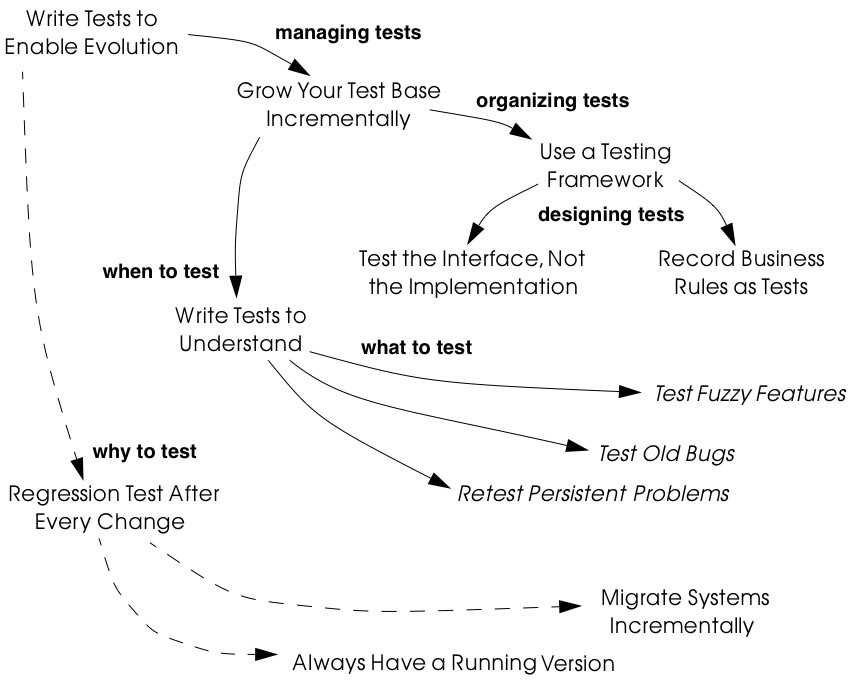
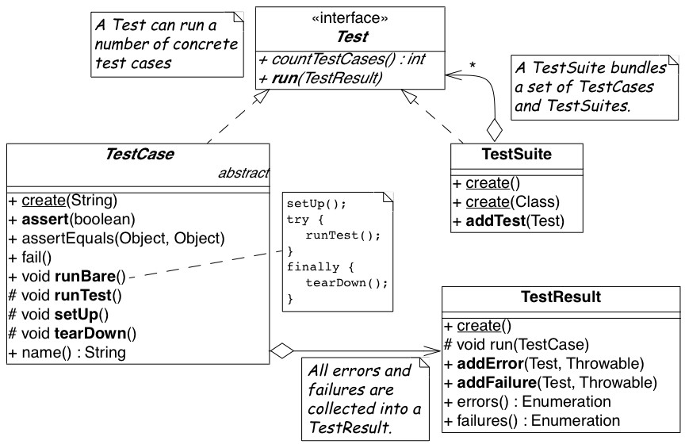
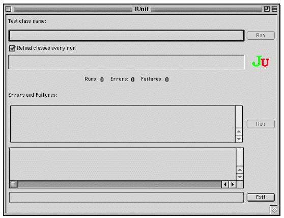
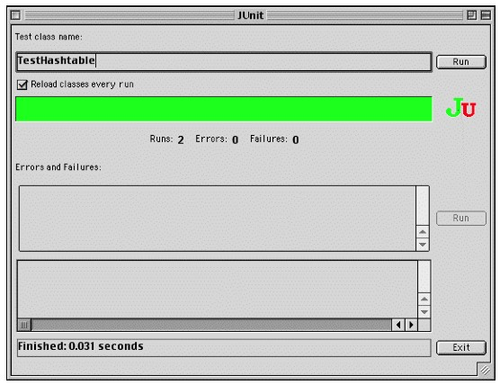

6. Tests: Your Life Insurance!
You are at the beginning of a reengineering project. You know that you will have to perform radical surgery on many parts of a valuable legacy system. You are wondering how you will be able to minimize the risks of changing a system on which your business depends: the risk of breaking features that used to work, the risk of spending too much effort on the wrong tasks, the risk of failing to integrate needed new functionality into the system, and the risk of further increasing maintenance costs.
The patterns presented in this cluster present effective ways of using tests in a reengineering context to reduce the risks posed by reengineering changes.
Caveat. Testing is a rich and important subject that can scarcely be covered in any depth in the few pages we devote to it in this chapter. We have done no more than identify a few of the more significant testing patterns that are especially relevant to reengineering projects, and briefly sketch out some of the key issues. Binder, for example, devotes an entire book to testing object-oriented systems [Bin99].
Forces
These patterns share common forces that concern various elements of risk for the evolution of the legacy system. Each pattern addresses some of these forces in order to achieve a certain balance between effort and risk.
Reengineering Forces
-
Legacy systems often do not have test procedures defined.
-
Changing parts of a system without introducing new bugs is a challenging task.
System Development Forces
-
Not every aspect of a system can be tested.
-
Certain aspects are like concurrency and user interfaces are difficult to test.
-
Under time pressure, writing tests is always the task that is eliminated first.
-
Having all the knowledge of a system concentrated in only a few people poses a high risk for the future of the project.
Human Forces (customers)
-
Customers ultimately do not pay for tests but for new features in the system.
-
An unstable or buggy system is not acceptable for customers.
Human Forces (developers)
-
Programmers believe they do not need tests, since they write good code.
-
Programmers are not motivated by long term goals since they may leave the project in a month from now.
-
Programmers are more interested in tools and processes that can reduce the time they are losing in identifying problems.
-
Fixing bugs is not fun.
-
Writing tests is not considered to be a noble task.
Overview
As shown in Figure 6.1, Write Tests to Enable Evolution is the root of this cluster. It explains why systematic tests are critical to reengineering projects and what kinds of tests are necessary. It is based on Grow Your Test Base Incrementally which advocates strategies for introducing new tests as you need them.
In order to effectively manage incremental introduction of tests, it is important to Use a Testing Framework to structure and organize suites

Figure 6.1: When, why, how and what to test. of tests. The testing framework should support you in designing certain styles of tests. In particular, if you Test the Interface, Not the Implementation of components, by using black-box testing strategies, then your tests will tend to be more useful in the face of system changes. Furthermore, if you can Record Business Rules as Tests, then you will have an effective way to keep the business rules explicitly represented and continuously synchronized with the running system even in the presence of radical changes.
Tests may be introduced at various times for various reasons. Write Tests to Understand advocates investing testing effort in those parts of the system that you need to understand in order to implement changes. More specifically, it is a good idea to Test Fuzzy Features, to Test Old Bugs, and especially to Retest Persistent Problems.
The patterns in this cluster directly support Migration Strategies [p. 165] for reengineering: Regression Test After Every Change [p. 182] helps you build confidence by ensuring that everything still runs after every incremental change to the system. In effect, tests are a necessary precondition to Always Have a Running Version [p. 180], and they enable you to Migrate Systems Incrementally [p. 174].
6.1 Write Tests to Enable Evolution
Intent Protect your investment in the legacy code by imposing a systematic testing program.
Problem
How do you minimize the risks of a reengineering project, specifically, the risks of:
-
failing to simplify the legacy system,
-
introducing yet more complexity to the system,
-
breaking features that used to work,
-
spending too much effort on the wrong tasks,
-
failing to accommodate future change.
This problem is difficult because:
-
Impact of changes cannot always be predicted because parts of the system may not be well-understood or may have hidden dependencies.
-
Any change to a legacy system may destabilize it due to undocumented aspects or dependencies.
Yet, solving this problem is feasible because:
-
You have a running system, so you can determine what works and what doesn’t work.
-
You know which parts of the system are stable, and which are subject to change.
Solution
Introduce a testing process based on tests that are automated, repeatable and stored.
Hints
Well-designed tests exhibit the following properties:
-
Automation. Tests should run without human intervention. Only fully automated tests offer an efficient way to check after every change to the system whether it still works as it did before. By minimizing the effort needed to run tests, developers will hesitate less to use them.
-
Persistence. Tests must be stored to be automatable. Each test documents its test data, the actions to perform, and the expected results. A test succeed if the expected result is obtained, otherwise it fails. Stored tests document the way the system is expected to work.
-
Repeatability. Confidence in the system is increased if tests can be repeated after any change is implemented. Whenever new functionality is added, new tests can be added to the pool of existing tests, thereby increasing the confidence in the system.
-
Unit testing. Tests should be associated to individual software components so that they identify clearly which part of the system they test [Dav95].
-
Independence. Each test should minimize its dependencies on other tests. Dependent tests typically result in avalanche effects: when one test breaks, many others break as well. It is important that the number of failures represent quantitatively the size of the detected problems. This minimizes distrust in the tests. Programmers should believe in tests.
Tradeoffs
Pros
-
Tests increase your confidence in the system, and improve your ability to change the functionality, the design and even the architecture of the system in a behavior-preserving way.
-
Tests document how artifacts of a system are to be used. In contrast to written documentation, running tests are an always up-to-date description of the system.
-
Selling testing to clients who are concerned by security and stability is not usually a problem. Assuring long term life of the system is also a good argument.
-
Tests provide the necessary climate for enabling future system evolution.
-
Simple unit testing frameworks exist for all the main object-oriented languages like Smalltalk, Java, C++ and even Perl.
Cons
-
Tests do not come for free. Resources must be allocated to write them.
-
Tests can only demonstrate the presence of defects. It is impossible to test all the aspects of a legacy system (or any system, for that matter).
-
Inadequate tests will give you false confidence. You may think your system is working well because all the tests run, but this might not be the case at all.
Difficulties
-
A plethora of testing approaches exists. Choose a simple approach that fits your development process.
-
Testing legacy systems is difficult because they tend to be large and undocumented. Sometimes testing a part of a system requires a large and complex set-up procedure, which may seem prohibitive.
-
Management may be reluctant to invest in testing. Here are some arguments in favor of testing:
-
Testing helps to improve the safety of the system.
-
Tests represent a tangible form of confidence in the system functionality.
-
Debugging is easier when automated tests exist.
-
Tests are simple documentation that is always in sync with the application.
-
-
Developers may be reluctant to adopt testing. Build a business case to show them that tests will not only speed up today’s development, but they will speed up future maintenance efforts. Once we discussed with a developer who spent one day fixing a bug and then three days more checking if the changes he made were valid. When we showed him that automated tests could help him in his daily work to debug his program more quickly, he was finally convinced.
-
Testing can be boring for developers so at least use the right tools. For unit testing, SUnit and its many variants are simple, free and available for Smalltalk, C++, Java and other languages [BG98].
Example
The following code illustrates a unit test written using JUnit in Java[BG98]. The test checks that the add operation defined on a class Money works as expected, namely that 12 CHF + 14 CHF = 26 CHF.
public class MoneyTest extends TestCase { public void testSimpleAdd() {
Money m12CHF= new Money(12, "CHF"); // (1)
Money m14CHF= new Money(14, "CHF");
Money expected= new Money(26, "CHF");
Money result= m12CHF.add(m14CHF); // (2)
assert(result.currency().equals(expected.currency()) &&
result.amount() == expected.amount()); // (3)
}
}This satisfies the properties that a test should have:
-
This test is automated: It returns boolean value true if the action is the right one and false otherwise.
-
It is stored: it is a method of a test class. So it can be versioned like any other code.
-
It is repeatable: its initialization part ()1) produces the context in which the test can be run and rerun indefinitely.
-
It is independent of the other tests.
Using tests having these properties helps you to build a test suite for the long term. Every time you write a test, either after a bug fix or adding a new feature, or to test an already existing aspect of the system, you are adding reproducible and verifiable information about your system into your test suite. Especially in the context of reengineering a system this fact is important, because this reproducible and verifiable information can be checked after any change to see if aspects of a system are compromised.
Rationale
Tests represent confidence in a system, because they specify how parts of the system work in a verifiable way, and because they can be run at any time to check if the system is still consistent.
“… testing simply exposes the presence of flaws in a program; it cannot be used to verify the absence of flaws. It can increase your confidence that a program is correct”
#FIXME figure missing
Figure 6.2: Automated tests are the foundation for reengineering. They establish your confidence in the system, reduce risks, and improve confidence in your ability to change the system.
— Alan Davis, Principle 111 [Dav95]
Systematic testing is heavily promoted by Extreme Programming [Bec00] one of the basic techniques necessary to be able to adapt programs quickly to changing requirements. Changing legacy systems is risky business. Will the code still work after a change? How many unexpected sideeffects will appear? Having a set of automated, repeatable tests helps to reduce this risk.
-
A set of running tests provides confidence in the system. (“Are you really sure this piece of code works?” “Yes, look, here I have the tests that prove it.”)
-
A set of running tests represents reproducible and verifiable information about your system, and is at all times in sync with the application. This in contrast to most of the written documentation, which is typically slightly outdated already the next day.
-
Writing tests increases productivity, because bugs are found much earlier in the development process.
Related Patterns
Write Tests to Enable Evolution is a prerequisite to Always Have a Running Version [p. 180]. Only with a comprehensive test program in place can you Migrate Systems Incrementally [p. 174].
Grow Your Test Base Incrementally and Test the Interface, Not the Implementation introduce a way to incrementally build a test suite while a system is evolving.
6.2 Grow Your Test Base Incrementally
Intent Balance the costs and the benefits of tests by incrementally introducing just the tests you need at a given point in time.
Problem
When should you start to introduce tests? When can you stop?
This problem is difficult because:
-
In a reengineering project, you cannot afford to spend too much time for writing tests.
-
Legacy systems tend to be huge, so testing everything is impossible.
-
Legacy systems tend to be poorly-documented and poorlyunderstood.
-
The original developers may have left and the system maintainers may have only limited knowledge of the system’s inner workings.
Yet, solving this problem is feasible because:
-
We know where the fragile parts or the parts that we would like to change are.
-
We could convince programmers that they can benefit from tests.
Solution
Introduce tests incrementally for parts of the system you are working on.
Hints
-
Carefully assess your priorities and initially develop tests only for the most critical components. As you reengineer the system, introduce tests for the new features, parts of the legacy that may be affected, and any bugs you identify along the way.
-
Keep a snapshot of the old system handy so you can later introduce tests that should run against both the original system and its new incarnation.
-
Focus on business values. Start to write tests for the parts of your system that have the most important artifacts. Try to Record Business Rules as Tests.
-
If you have the history of bug fixes or problems, apply Test Old Bugs [p. 290] as a starting point.
-
If you have acceptable documentation and some original developers of the system at hand, consider applying Test Fuzzy Features [p. 290].
-
Apply Test the Interface, Not the Implementation, start to test big abstractions and then refine tests if time allows. For example, if you have a pipeline architecture, start to write tests that ensure you that the output of the full pipeline is right given the right input. Then write tests for the individual pipeline components.
-
Black-box test parts (subsystems, classes, methods) that are likely to change their implementation in the future.
Tradeoffs
Pros
-
You save time by only developing the tests that you need.
-
You build up a base of the most critical tests as the project progresses.
-
You build confidence as you go along
-
You streamline future development and maintenance activities.
Cons
-
You may guess wrong which aspects are critical to test.
-
Tests can give you false confidence — untested bugs can still lurk in the system.
Difficulties
-
Setting-up the proper context for the tests may require considerable time and effort.
-
Identifying the boundaries of the components to test is just hard. Deciding which parts to test and how fine-grained these tests should be, requires a good understanding of the system and the way you intend to reengineer it.
Example
#FIXME figure missing
Figure 6.3: Introduce tests for the parts of the system you intend to change.
Initially introduce tests only for the subsystems and component you intend to change. In Figure 6.3 we introduce some tests for subsystem ABC and for its component B. We apply Test the Interface, Not the Implementation to ensure that the tests for B should also pass for newB.
Note that if we only introduce tests for component B, then we fail to test its integration with A and C. In any case, it may be that we fail to test all important aspects, so it is important to incrementally add new tests as bugs are detected and repaired.
Rationale
An incremental testing strategy allows you to start reengineering efforts before all the tests are in place. By focussing on just those tests that concern the parts of the system you are currently changing, you enable change with a minimal investment in testing, while help your team build confidence as you grow your tests base.
Related Patterns
Use a Testing Framework to organize your tests.
Test the Interface, Not the Implementation provides a strategy for developing tests at arbitrary granularities. Record Business Rules as Tests provides another strategy for testing components that implement business logic. Write Tests to Understand helps you prime a test base while you are still reverse engineering the system.
6.3 Use a Testing Framework
Intent Encourage developers to write and use regression tests by providing a framework that makes it easy to develop, organize and run tests.
Problem
How do you encourage your team to adopt systematic testing?
This problem is difficult because:
-
Tests are boring to write.
-
Tests may require a considerable test data to be built up and torn down.
-
It may be hard to distinguish between test failures and unexpected errors.
Yet, solving this problem is feasible because:
-
Most tests follow the same basic pattern: create some test data, perform some actions, see if the results match your expectations, clean up the test data.
-
Very little infrastructure is needed to run tests and report failures and errors.
Solution
Use a testing framework that allows suites of tests to be composed from individual test cases.
Steps
Unit testing frameworks, like JUnit and SUnit [BG98], and various commercial test harness packages are available for most programming languages. If a suitable testing framework is not available for the programming language you are using, you can easily brew your own according to the following principles:
-
The user must provide test cases that set up test data, exercise them, and make assertions about the results
-
The testing framework should wrap test cases as tests which can distinguish between assertion failures and unexpected errors.
-
The framework should provide only minimal feedback if tests succeed.
-
Assertion failures should indicate precisely which test failed.
-
Errors should result in more detailed feedback (such as a full stack trace).
-
-
The framework should allow tests to be composed as test suites.
Tradeoffs
Pros
-
A testing framework simplifies the formulation of tests and encourages programmers to write tests and use them.
Cons
-
Testing requires commitment, discipline and support. You must convince your team of the need and benefits of disciplined testing, and you must integrate testing into your daily process. One way of supporting this discipline is to have one testing coach in your team; consider this when you Appoint a Navigator [p. 23].
Example
JUnit is a popular testing framework for Java, which considerable enhances the basic scheme described above. Figure 6.4 shows that the framework requires users to define their tests as subclasses of TestCase. Users must provide the methods setUp(), runTest() and tearDown(). The default implementation of setup() and tearDown() are empty, and the default implementation of runTest() looks for and runs a method which is the name of the test (given in the constructor). These user-supplied hook methods are then called by the runBare() template method.
JUnit manages the reporting of failures and errors with the help of an additional TestResult class. In the design of JUnit, it is an instance of TestResult that actually runs the tests and logs errors or failures. In Figure 6.5 we see a scenario in which a TestCase, in its run method, passes

Figure 6.4: JUnit is a popular testing framework for Java that offers much more flexibility than the minimal scheme described above.
control to an instance of TestResult, which in turn calls the runBare template method of the TestCase.
TestCase additionally provides a set of different kinds of standard assertion methods, such as assertEquals, assertFails, and so on. Each of these methods throws an AssertionFailedError, which can be distinguished from any other kind of exception.
In order to use the framework, we will typically define a new class, say TestHashtable, that bundles a set of test suites for a given class, Hashtable, that we would like to test. The test class should extend junit.framework.TestCase:
import junit.framework.*; import java.util.Hashtable; public class TestHashtable extends TestCase {The instance variables of the test class will hold the fixture - the actual test data:
private Hashtable boss; private String joe = "Joe";#FIXME figure missing Figure 6.5: In JUnit, tests are actually run by an instance of TestResult, which invokes the runBare template method of a TestCase. The user only needs to provide the setUp() and tearDown() methods, and the test method to be invoked by runTest().
private String mary = "Mary";
private String dave = "Dave";
private String boris = "Boris";There should be constructor that takes the name of a test case as its parameter. Its behavior is defined by its superclass:
public TestHashtable(String name) {
super(name);
}The setUp() hook method can be overridden to set up the fixture. If there is any cleanup activity to be performed, we should also override tearDown(). Their default implementations are empty.
protected void setUp() \{ boss = new Hashtable();
}We can then define any number of test cases that make use of the fixture. Note that each test case is independent, and will have a fresh copy of the fixture. (In principle, we should design tests that not only exercise the entire interface, but the test data should cover both typical and boundary cases. The sample tests shown here are far from complete.)
Each test case should start with the characters “test":
public void testEmpty() \{ assert(boss.isEmpty()); assertEquals(boss.size(), 0); assert(!boss.contains(joe));
assert(!boss.containsKey(joe));
}
public void testBasics() \{ boss.put(joe, mary); boss.put(mary, dave); boss.put(boris, dave); assert(!boss.isEmpty()); assertEquals(boss.size(), 3); assert(boss.contains(mary)); assert(!boss.contains(joe)); assert(boss.containsKey(mary)); assert(!boss.containsKey(dave)); assertEquals(boss.get(joe), mary); assertEquals(boss.get(mary), dave); assertEquals(boss.get(dave), null);
}You may provide a static method suite() which will build an instance of junit.framework.TestSuite from the test cases defined by this class:
public static TestSuite suite() { TestSuite suite = new TestSuite(); suite.addTest(new TestHashtable("testBasics")); suite.addTest(new TestHashtable("testEmpty")); return suite;
}
}The test case class should be compiled, together with any class it depends on.
To run the tests, we can start up any one of a number of test runner classes provided by the JUnit framework, for instance junit.ui.TestRunner (see Figure 6.6).
This particular test runner expects you to type in the name of the test class. You may then run the tests defined by this class. The test runner will look for the suite method and use it to build an instance of TestSuite. If you do not provide a static suite method, the test runner will automatically build a test suite assuming that all the methods named test* are test cases. The test runner then runs the resulting test suite. The interface will report
_
Figure 6.6: An instance of java.ui.TestRunner.

Figure 6.7: A successful test run. how many tests succeeded (see Figure 6.7). A successful test run will show a green display. If any individual test fails, the display will be red, and details of the test case leading to the failure will be given.
Rationale
A testing framework makes it easier to organize and run tests.
Hierarchically organizing tests makes it easier to run just the tests that concern the part of the system you are working on.
Known Uses
Testing frameworks exist for a vast number of languages, including Ada,
ANT, C, C++, Delphi, .Net (all languages), Eiffel, Forte 4GL, GemStone/S,
Jade, JUnit Java, JavaScript, k language (ksql, from kbd), Objective C, Open Road (CA), Oracle, PalmUnit, Perl, PhpUnit, PowerBuilder, Python, Rebol, ‘Ruby, Smalltalk, Visual Objects and UVisual Basic.
Beck and Gamma give a good overview in the context of JUnit [BG98].
6.4 Test the Interface, Not the Implementation
Also Known As: Black-Box Testing [Pre94]
Intent Build up reusable tests that focus on external behavior rather than on implementation details, and thereby will survive changes to the system.
Problem
How can you develop tests that not only protect your software legacy, but also will continue to be valuable as the system changes?
This problem is difficult because:
-
Legacy systems have many features that should continue to function as the system evolves.
-
You cannot afford to spend too much time writing tests while reengineering the system.
-
You do not want to waste effort in developing tests that will have to be changed as you change the system.
Yet, solving this problem is feasible because:
-
The interfaces to the components of the system tell you what should be tested.
-
Interfaces tend to be more stable than implementations
Solution
Develop black-box tests that exercise the public interface of your components.
Hints
-
Be sure to exercise boundary values (i.e., minimum and maximum values for method parameters). The most common errors occur here.
-
Use a top-down strategy to develop black-box tests if there are many fine-grained components that you do not initially have time to develop tests for.
-
Use a bottom-up strategy if you are replacing functionality in a very focused part of the legacy system.
Tradeoffs
Pros
-
Tests that exercise public interfaces are more likely to be reusable if the implementation changes.
-
Black-box tests can often be used to exercise multiple implementations of the same interface.
-
It is relatively easy to develop tests based on a component’s interface.
-
Focusing on the external behavior reduces considerably the possible tests to be written while still covering the essential aspects of a system.
Example
Let’s look back at the test presented in Write Tests to Enable Evolution. The code we saw earlier was supposed to check whether the add operation defined on a class Money works as expected. However, we see that the assert in line (3) actually depends on the internal implementation of the Money class, because it checks for equality by accessing the parts of equality.
public class MoneyTest extends TestCase \{
// ...
public void testSimpleAdd() \{
Money m12CHF= new Money(12, "CHF");
|// (1)
a|
Money m14CHF= new Money(14, "CHF");
Money expected= new Money(26, "CHF");
Money result= m12CHF.add(m14CHF); // (2)
assert(result.currency().equals(expected.currency())
&& result.amount() == expected.amount()); // (3)
}
}However, if the class Money would override the default equals operation defined on Object (doing so would also require us to override hashCode), the last assert statement could be simplified and would become independent of the internal implementation.
public class MoneyTest extends TestCase {
// ...
public void testSimpleAdd() {
Money m12CHF= new Money(12, "CHF"); // (1)
Money m14CHF= new Money(14, "CHF");
Money expected= new Money(26, "CHF");
Money result= m12CHF.add(m14CHF); // (2)
assert(expected.equals(result)); // (3)
}
}Rationale
The interface of a component is a direct consequence of its collaborations with other components. Black-box tests therefore have a good chance of exercising the most important interactions of a system.
Since interfaces tend to be more stable than implementations, blackbox tests have a good chance of surviving major changes to the system, and they thereby protect your investment in developing tests.
Known Uses
Black-Box testing is a standard testing strategy [Som96].
Related Patterns
Record Business Rules as Tests adopts a different strategy to developing tests which focuses on exercising business rules. This is fine if the components to be tested are the ones that implement the business logic. For most other components, Test the Interface, Not the Implementation will likely be more appropriate.
Components that implement complex algorithms may not be well-suited to black-box testing, since an analysis of the interface alone may not reveal all the cases that the algorithm should handle. White-box testing [Som96] is another standard technique for testing algorithms in which test cases are generated to cover all possible paths through an algorithm.
6.5 Record Business Rules as Tests
Intent Keep the system in sync with the business rules it implements by encoding the rules explicitly as tests.
Problem
How do you keep the actual business rules, the documentation about those business rules and the system implementation in sync, while all three are changing?
This problem is difficult because:
-
Written documentation gets out of date quickly and does not ensure you that your system really implements the description of the business rules you have.
-
Business rules tend to be implicit in the code. It may not be obvious which pieces of software are responsible for computing a given business rule.
-
Developer turn-over introduces a high risk for your business by having more and more people knowing less and less about the system.
-
Most of the time only one programmer or user knows specific rules, and that person could be leaving tomorrow.
-
Business rules are likely to change due to external factors, such as the introduction of a new law, so it is important to represent them explicitly.
Yet, solving this problem is feasible because:
-
Most business rules are well expressed by sets of canonical examples, each of which requires certain well-defined actions to be taken, and results in some clear, observable results.
Solution
Write executable tests that record the business rules as test cases, actions, and tests over the results. When tests break, you know that things are out of sync.
Hints
-
Developers and clients can write tests. Developers may write tests associated with specific functionality or piece of code. User may also have to write integration tests in the form of use cases that bind together several unit tests [Dav95] [Bec00].
-
Note that you are not interested in the implementation strategies or optimization aspects, but only the business rules.
Tradeoffs
Pros
-
The rules become explicit, thereby reducing dependency on human memory.
-
You need to record the business rules anyway before you can reengineer the legacy system.
-
Recording business rules as tests enables evolution: when new features must be added, you can check that the existing business rules are still correctly implemented by running the regression tests. On the other hand, when the business rules change, you can update the corresponding tests to reflect the changes.
Examples
In this example we compute the amount of additional money an employee receives for a child. The rule states that a person or couple gets an amount of money for every child he, she or they raise. Basically parents get CHF 150,- per month for every child younger than 12 years, and CHF 180,- for every child between 12 and 18 and for every child between 18 and 25 as long as the child is not working and is still in the educational system. A single parent gets the full 100% of this money as long as he or she is working more than 50%. Couples get a percentage of the money that is equal to the summed working percentages of both partners.
The following Smalltalk code shows a test that hardcodes the expected outcomes for the different computations. It allows for automatically checking the outcomes instead of having to print the outcomes and check by hand if they are right, and it acts as a regression test. Secondly it documents the expected outcome of the different computations.
testMoneyGivenForKids
| singlePerson80occupationWithOneKidOf5 couplePerson40occupationWithOneKidOf5 couplePerson100occupationWith2KsidOf5 couplePersonWithOneKidOf14 |
"cases are extracted from a database after the system has performed the computation"
singlePerson80WithOneKidOf5 := extract....
couplePerson40occupationWithOneKidOf5 := extract.... couplePerson100occupationWithOneKidOf5 := extract....
couplePersonWithOneKidOf14 := extract.... "tests"
"We test that the right amount of money is computed correctly"
self assert: singlePerson80occupationWithOneKidOf5 moneyForKid = 150. self assert: couplePerson40occupationWithOneKidOf5 moneyForKid
150*4. self assert: couplePerson100occupationWith2KidsOf5 moneyForKid
150*2.
self assert: couplePersonWithOneKidOf14 moneyForKid = 180.Rationale
Tests are a good way to document what the system does. By documenting business rules as tests, you guarantee that the description of the business rules will be in sync with the implementation.
The beginning of a reengineering project is a good point in time to set up a process to document knowledge about the system as explicit tests.
6.6 Write Tests to Understand
Intent Record your understanding of a piece of code in the form of executable tests, thus setting the stage for future changes.
Problem
How do you develop an understanding of a part of a legacy system which contains neither tests nor accurate and precise documentation?
This problem is difficult because:
-
Code is always difficult to understand.
-
You would like to make hypotheses about what the code is really doing and validate them.
-
You would like to specify as precisely as possible the behavior of the system.
-
You would like to record your understanding to communicate it but you do not want to waste your time in writing documents that will be obsolete as soon as you start changing the code.
Yet, solving this problem is feasible because:
-
The piece of code is relatively small and has clearly defined boundaries.
-
You have the possibility to specify tests and validate them.
Solution
Encode your hypotheses and conclusions as executable tests.
Tradeoffs
Pros
-
Tests help you to validate your understanding.
-
Tests can provide a precise specification of certain aspects of the system. Tests cannot be fuzzy.
-
Tests can be applied to gain different levels of understanding. For example, black-box tests can help you to refine your understanding of roles and collaborations, whereas white-box tests can help you to gain understanding of the implementation of complex logic.
-
The tests that you develop will help to enable future reengineering effort.
-
Tests will force you to be precise about the creation and the use of the objects under test.
Cons
-
Writing tests is time consuming.
Difficulties
-
Obtaining a well defined context in which you can test the objects is difficult especially if the objects to be tested do not represent specific abstractions. Looking for the places where objects you want to understand are created can help.
-
Concurrent systems are known to be difficult to test, so tests can miss important aspects (such as handling of race conditions).